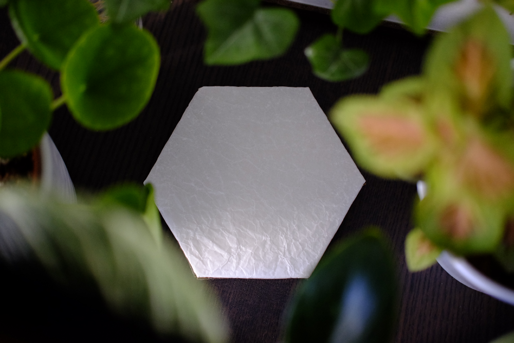
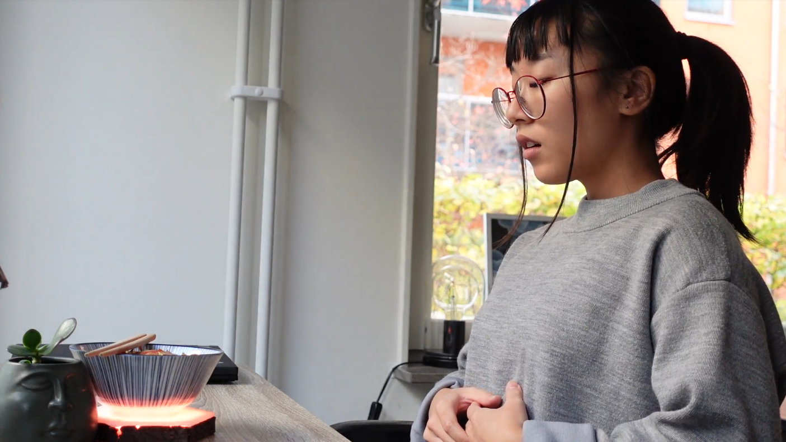
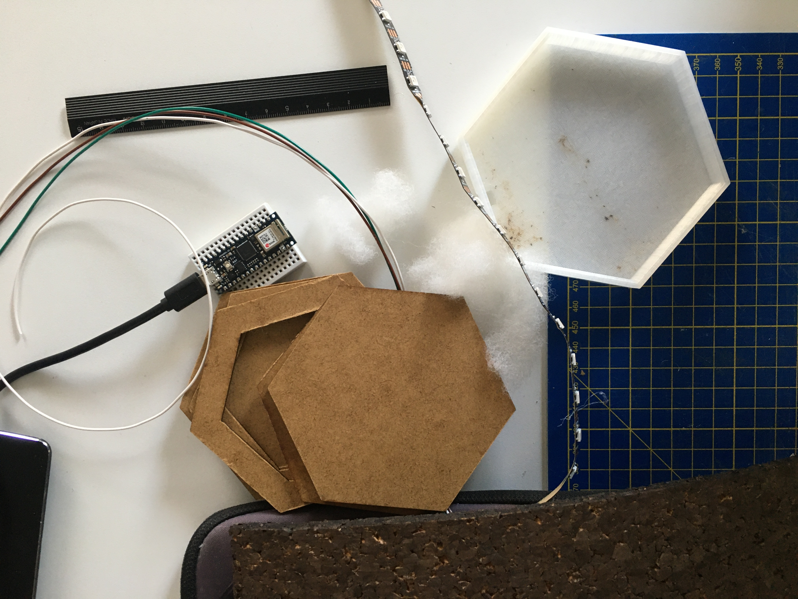

SPIR: Take A Breather With A Smart Coaster
- Physical Interaction
- Prototyping
- Arduino
- User Tests
- Microprocessor
Prompted by the theme "Pandemic Media", we wanted to focus on the space of your own home. A photo safari was done to gain insights on the changes of one's home. Results showed that as things moved towards being carried out remotely, the home became a multispace. It was not only a place for sleep, food, and relaxation, it also acted as an office and a gym.
In a situation where the line separating free and working time is becoming increasingly blurred, it is important to find those micro-opportunities for relaxation and self-care. We found that the natural breaks one takes during meals could be used for this purpose.
My main contributions to this project was 3D modelling the coaster base, and programming the LED-lights. The coaster base was modelled using SolidWorks, and the LED-lights were programmed using an Arduino UNO and Neopixels.
The final prototype was well recieved, with comments such as "It helps me feel better when I take a deep breath" and "Even just looking at the video of the prototype calmed me down. I breathed with the light without even thinking much about it. The interaction was really inviting".